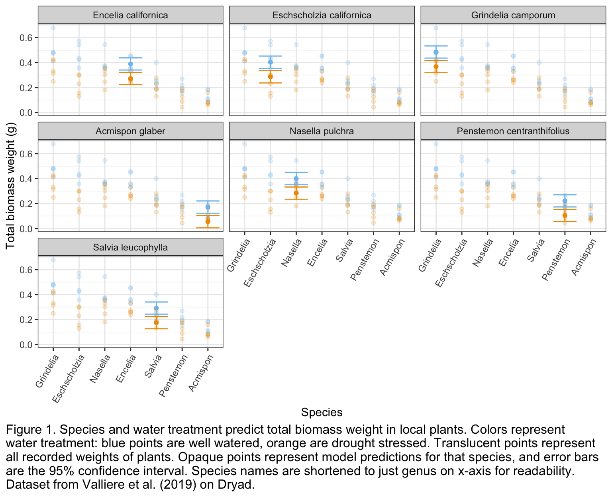

# general use
library(tidyverse)
library(readxl)
library(here)
library(janitor)
# visualizing pairs
library(GGally)
# model selection
library(MuMIn)
# model predictions
library(ggeffects)
# model tables
library(gtsummary)
library(flextable)
library(modelsummary)
# read in personal data for #3 exploratory plot
breakfast <- read_csv("stats brekkie data.csv") |>
clean_names() |> # clean names
slice(1:38) # select dates I've collected data forHomework 3
make sure everything is commented!
Read in packages/data
1: Multiple linear regression: model selection and construction
1.a. Table 1. Model selection for multiple linear regression of total biomass as a function of SLA, water treatment, and/or species. Five models are considered, with Model 0 as the null model (no predictors), Model 1 as the saturated model (all predictors), and Models 2-4 with some combination of the 3 predictors. The rows represent the different models, and columns represent the different aspects of each model. Rows are sorted by “best” (lowest AIC value) model to “worst” (highest AIC value) model.
# create table of models
models <- read_csv("models.csv")
flextable(models)Model number | Model description | Predictors | AIC | AIC delta |
|---|---|---|---|---|
4 | water + species | water, species | -156.2 | 0.00 |
1 | saturated model | SLA, water, species | -153.8 | 2.44 |
3 | SLA + species | SLA, species | -124.1 | 32.12 |
2 | SLA + water | SLA, water | -95.8 | 60.37 |
0 | null model | none | -75.0 | 81.22 |
1.b.
1.c.
1.d.
1.e.
2: Affective visualization
2.a. My personal data is focused on when/what I eat for breakfast based on what I’m doing after. Since the “theme” is breakfast and activities, I could use these as my visualizations. I’m thinking of using emojis of breakfast foods or activities to be the points of a scatterplot. Or, I could scale the size of the emojis to represent how many times I’ve eaten that food or done that activity.
2.b. [insert sketch!]
# exploratory plot
ggplot(data = breakfast,
aes(x = activity_category,
y = time)) + # dataframe & axes
# scatter plot!
geom_point()
2.c. [insert final graph!] Figure 1. When I have breakfast based on what activity I’m doing after. The icons represent the activity type and the mean time of day (gym = 8:17 am, pottery = 8:49 am, work = 10:25 am, homework = 9:02 am, recreation = 11:34 am) I eat breakfast before doing the corresponding activity. The icons’ size corresponds to how many times I have recorded doing that activity (gym = 7, pottery = 8, work = 8, homework = 11, recreation = 9). The background is an example of what I usually eat for breakfast.
2.d. This is an artistic rendition of how the activity I do after breakfast influences what time I eat breakfast, with icons representing the type of activity, and the size of the icon representing how many times I recorded that activity (recreation the most, gym the least). I was influenced by artists who use emojis, which simply and easily convey a lot more information than just words, to communicate information in infographics on various social media news forums (such as the accounts @feminist and @thenewsmovement). The form is “digital collage”, since I used various images, icons, and text to create my graph. I used Adobe Photoshop to create this piece, as the creative freedom to move all elements wherever I wanted to was crucial in being able to bring together everything into a cohesive message.
3: Statistical critique
3.a. Their main objective is: to quantify C and N storage of a restored wetland at the Emiquon Preserve (a restored wetland) and examine it for additional C sequestration by comparing its C storage with C storage of reference natural wetlands. They used a one-way ANOVA to determine how restored wetland soil depth influenced OC storage and TN storage of root biomass and soils. They also did a nested three-way ANOVA test to determine how the reference wetland type, soil depth, and site (nested within wetland type) influenced OC storage and TN storage of above and below ground plant biomass and soil.
[Insert fig 2 & 3!]
Fig. 2: Main message is that sedge meadows (restored wetlands) have significantly higher aboveground N and C storage than the reference marshes (natural wetlands). x-axis is aboveground C or N storage, y-axis is the wetland type (sedge or marsh). Fig. 3: Main message is that sedge meadows (restored wetlands) have significantly higher root N and C storage than the reference marshes (natural wetlands). Both have lower root N and C storage in the upper 20 cm of soil than 20-40 cm deep. x-axis is root C or N storage, y-axis is the wetland type (sedge or marsh).
3.b. They represented their statistics pretty clearly in the figures. However, they didn’t use color to differentiate between the sedge and marsh, and the use of white as a color in Fig. 3 is confusing because at first glance it just looks like a gap. The x and y axes are logical and easy to read, with correct units. They show standard deviation on top of all of the data, but no other summary statistics. The SD bars do help to show the large variance in data, but SE + mean could’ve been a better way to visualize that. They don’t have any applicable model predictions.
3.c. I think they handled visual clutter very well. The data:ink ratio is very high - all of the ink is being used to describe the data in a meaningful way. There are no gridlines, the plots aren’t cluttered with irrelevant data, the labels are also informative but not too detailed, and have units where appropriate. The a) and b) plots are also labeled clearly and explained in the caption instead of cluttering the plot with unnecessary titles/descriptions. The legend in figure 5 is simple but necessary as well.
3.d. My first recommendation is to use color instead of gray gradient (color blind friendly colors), especially replacing the white with a color so it’s clear that’s also data, not just blank space. I would also color code sedge and marsh in fig. 3 to make it more visually pleasing, and do different shades of those colors for the 3 depths in fig. 5. I would increase the axes text size a bit to make it easier to read. I would maybe replace standard deviation with mean/SE and/or add the underlying data as well. I would keep everything else the same because overall it’s a pretty good graph.